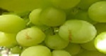
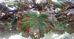
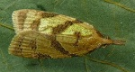
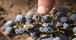
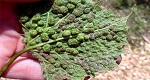
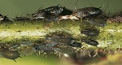

Tipos de plaga en la VID
| # | Plaga | Descripción |
|---|---|---|
| 1 | Trips (Frankliniella occidentalis) | Son unos insectos muy polífagos. Concretamente, Frankliniella occidentalis provoca muchos daños sobre los racimos y una gran pérdida económica.
Los daños se inician cuando la hembra realiza la puesta sobre los elementos florales (bayas en formación).  |
| 2 | Mosquito verde (Jabobiasca lybica) | El adulto mide en torno a los 3 mm y es de color verde claro. La plaga del mosquito verde coloniza en el envés de las hojas de la parra. Los daños que produce sobre la vid ocasionan la desecación de las nerviaciones de las hojas por succión, además, al inyectar saliva tóxica provoca la obstrucción de los vasos conductores y la interrupción de la circulación de la savia.
Los márgenes de las hojas amarilean y con el tiempo se necrosan y se secan.  |
| 3 | Piral (Sparganothis pilleriana) | Esta plaga está formada por orugas de color amarillento y de unos 3 cm de longitud. Tienen movimiento constante y son inquietas.
La oruga se alimenta de las hojas jóvenes, atacando seguidamente los racimos jóvenes, que une tejiéndolas con sus telas.  |
| 4 | Polilla del racimo (Lobesia botrana y Eupoecilla ambiguella) | En el caso de Eupoecilla, el adulto es una mariposa de entre 13 y 14 mm de envergadura. La oruga es de color rojizo-vinoso con cabeza negra. En Lobesia, el adulto es una mariposa mayor que Eupoecilla, y la oruga tiene un color verde-amarillento y
cabeza de color amarillo claro. En España, la más importante es Lobesia botrana.Los daños que causa la polilla del racimo ocasionan débiles impactos en el cultivo.  |
| 5 | Filoxera (Dactylosphaera vitifolii) | Se podría considerar a la filoxera de la vid como un pulgón con acción doble. En un ciclo de vida ataca las raíces de la parra, y en otro vive sobre la superficie y ataca las hojas.
Sobre las hojas se producen agallas muy características que se tornan de color rojo. Esto es a consecuencia de la introducción del estilete de la filoxera.  |
| 6 | Pulgón (Aphis gossypii) | Esta clase de pulgón forma colonias tanto en los brotes como en los racimos de uva. El hecho de que coexistan varios colores en dichos pulgones delata que conviven en distintos estados evolutivos, y no que haya diferentes especies conviviendo a la vez.
Es muy polífago y se alimenta de los jugos vegetales. Sobre la piel se producen picaduras que acaban necrosando y deprecian su valor comercial.  |